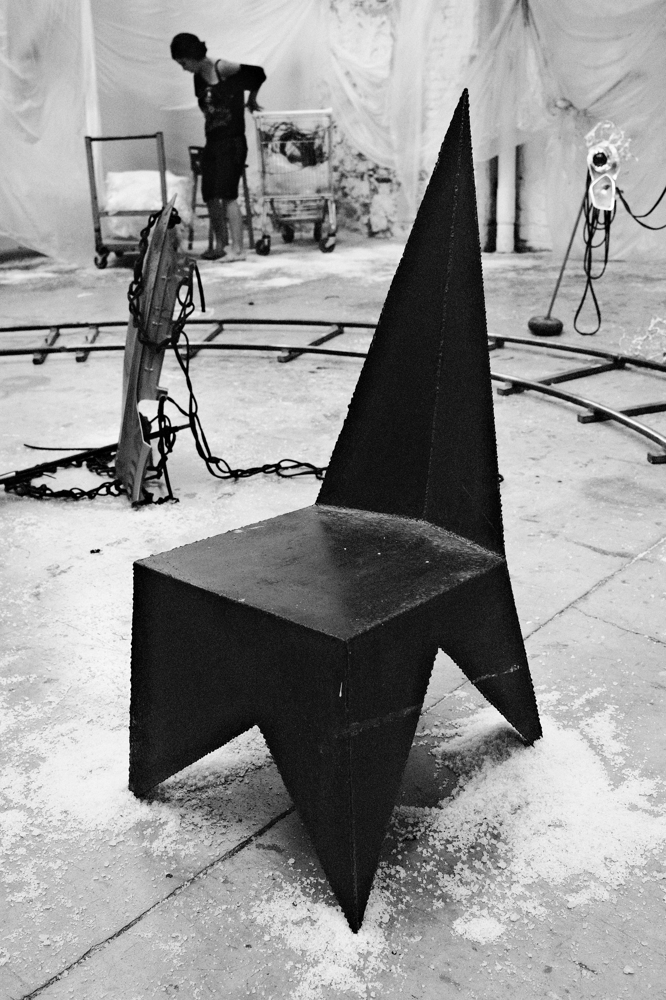
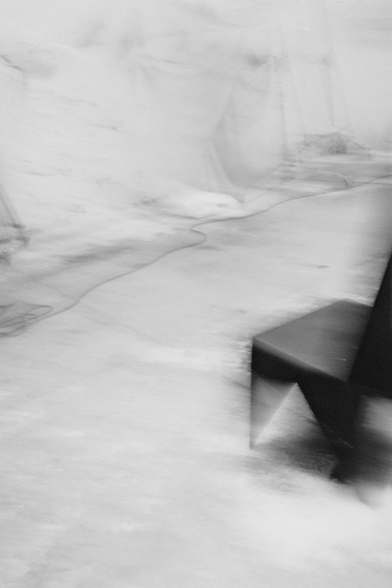
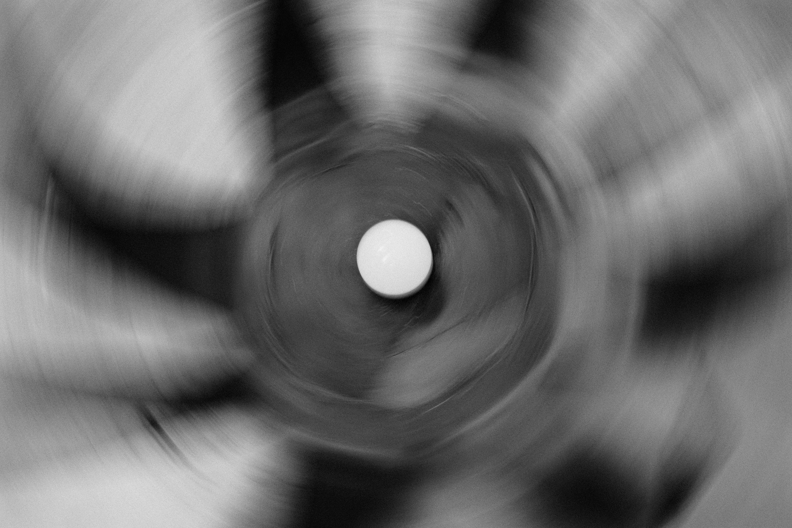
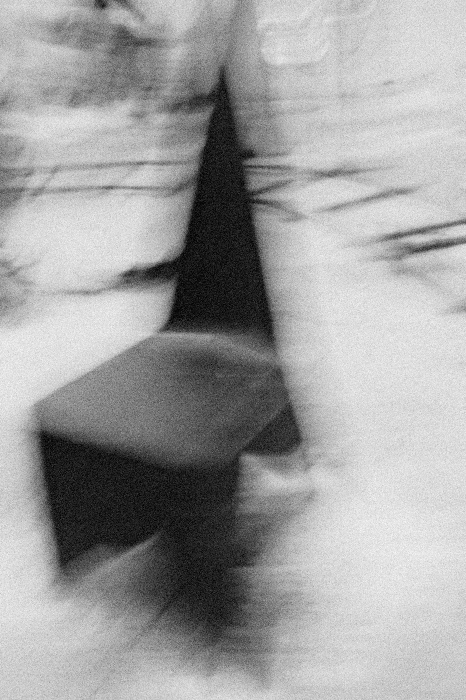

Con Pol Gilbert un día encontramos dos estrellas que habían caído del cielo. una parecía una silla la otra una lámpara. Ninguna funcionaba muy bien como tal: ni era comoda, ni iluminaba, ni era ligera, ni cuidadosa, ni se podía apagar... Pero nada de eso importa porque son nuestras estrellas caídas del cielo.